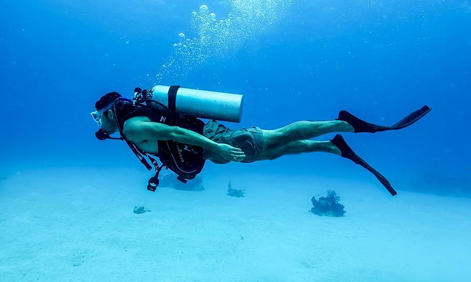
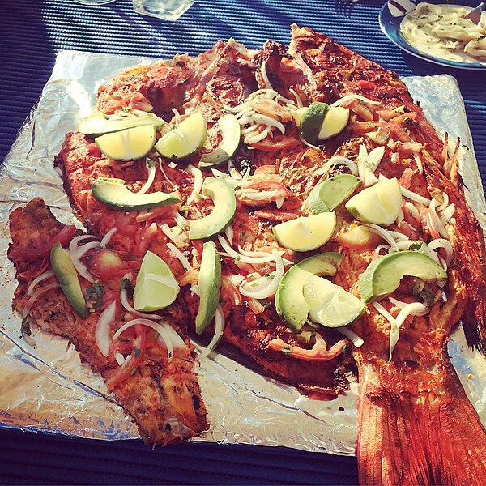
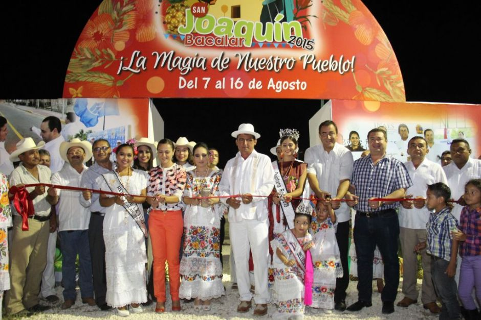
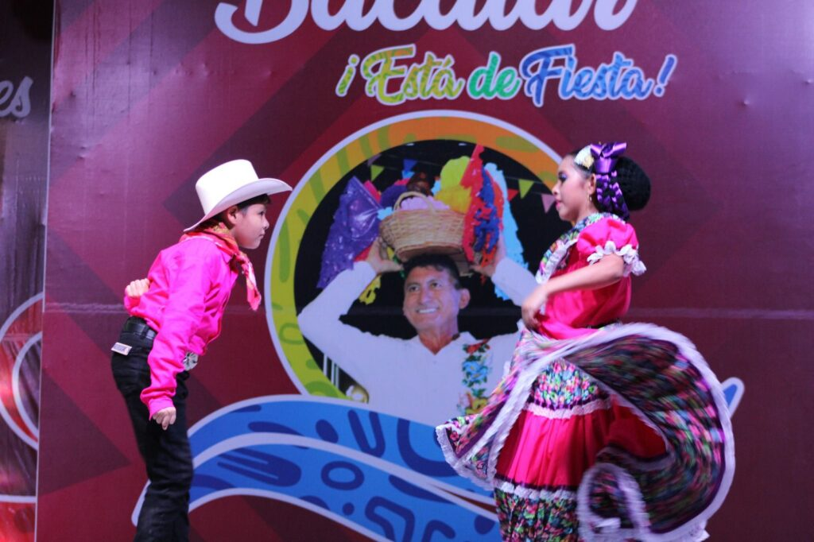
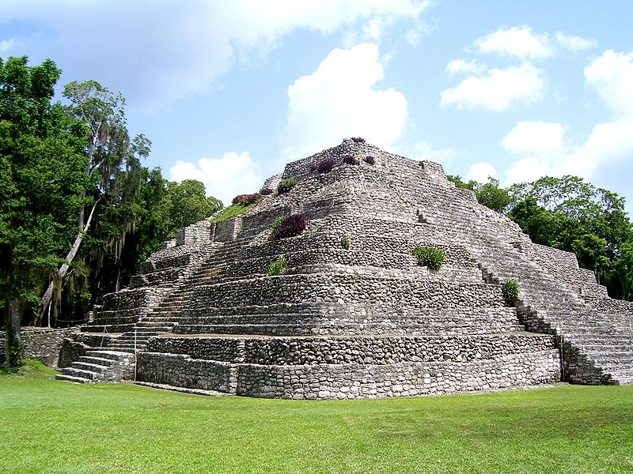

Dicen que las imágenes dicen más que mil palabras. Y es que una de las actividades que puedes realizar en este paraíso es el canotaje o el remo con kayak. Podrás recorrer el manglas e ir a lugares guiados como la isla de los pájaros o ir a los distintos cenotes de su cercanía como Cocalitos, Cenote Negro y Cenote Esmeralda. Nosotros te proporcionaremos el equipo necesario. Tu única preocupación va ser qué tanto puedes aguantar sin estar un segundo en este bellísimo lugar.
El snorkel se hace con un guía y que crees, ¡nosotros te proporcionaremos el equipo también! Aunque, no todo es snorkel. Puedes contratar un tour en lancha para recorrer la laguna, observar los paisajes, tomar fotografías y relajarte porque el único sonido que vas a escuchar será el de las aves y el del viento cuando arrastre congigo el olor dulce de una laguna que florece en 7 colores.

Algunos de los aperitivos que puedes disfrutar es el ceviche o el pescado a la tikinxik. Platillo prehispánico que se ha preservado hasta la actualidad.

Como te mencionamos en un inicio, el fuerte de San Felipe, es una estructura que fue construida para repeler el ataque de piratas y el ataque de los mayas que se opusieron a la injusticia española de la época.
Martes a domingo de 9:00 a 19:00 hrs.
| Visitante | Costo |
|---|---|
| Nacional | $55.00 MXN |
| Maestros, estudiantes y niños | $30.00 MXN |
| Extranjeros | $110.00 MXN |
El museo se encuentra dentro del Fuerte de San Felipe.
En México ya es tradición que en cada comunidad se celebra a un santo Patrono. En Bacalar es San Joaquín y las fiestas son en el mes de agosto, aunque año con año las fechas pueden ir cambiando, se realiza aproximadamente a mediados del mes. Dura una semana y podras disfrutar de lo siguiente:

Para conocer con detalle las fechas de la feria Envíame un correo.

La casa de la cultura es la principal promotora del arte en Bacalar. Puedes acudir a presentaciones de libros, talleres, conferencias, exposiciones de arte en sus distintas manifestaciones plásticas: pintura, música, danza folcklorica, teatro, entre otras, puedes disfrutarlas en este lugar. Conoce la programación en su página oficial. Casa de la cultura Bacalar

¿Y por qué no? Arriésgate a alejarte un poco de Bacalar. Chacchoben se encuentra a una hora de Bacalar, forman parte del mismo municipio. Para ello contamos con tours guiados y guías certificados que te explicarán y recorreras la ciudad antigua. Además, podrías tener la posibilidad de observar a los monos en su hábitat natural.

Si te causa un poco de duda te invito a conocer nuestra página de comentarios Opiniones de clientes
Autor: Manuel Cohuo
Envíame un correo